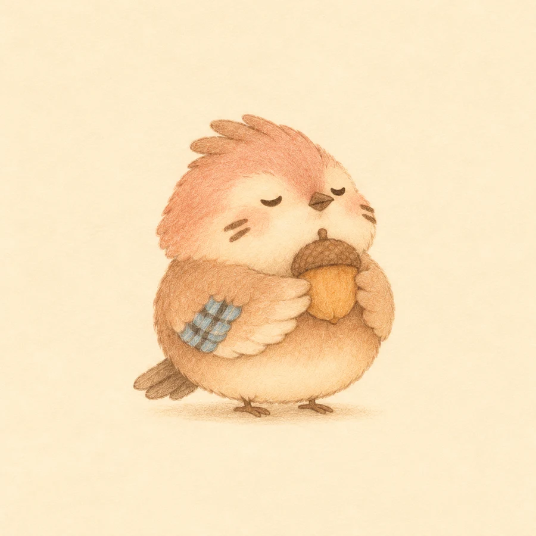
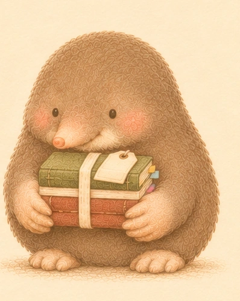
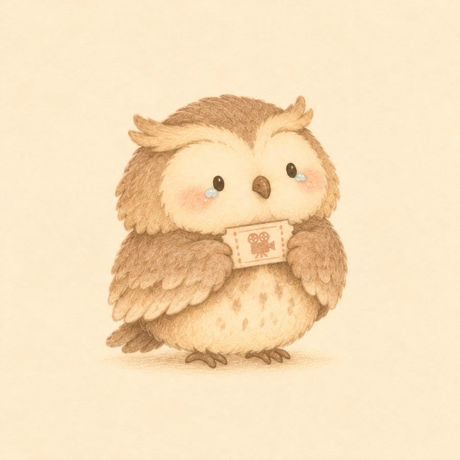
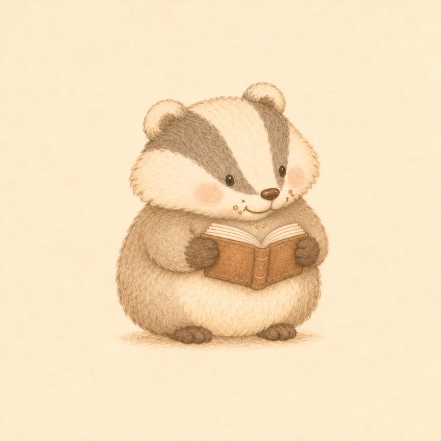

一起探路的收藏家
松鸦
“这个，说不定以后用得上。”
好奇、认真，还有一点小得意。总能发现路边值得带回家的小东西，尤其舍不得一颗漂亮的橡子。嘴上说自己很认路，偶尔也会和啾啾一起走错岔口。
常陪啾啾探路，替它记住树林里的新发现。遇到朋友需要，又愿意拿出自己最珍爱的收藏。
爱收藏有点逞强对朋友大方
下载角色图 ↗
 你好呀，我是啾啾。
你好呀，我是啾啾。一身嫩绿的羽毛，一点暖暖的腮红。啾啾住在海边，忙着送信，也忙着记住沿途的小事情。
有时候，它搬一片比自己还大的叶子；有时候，送错了门，就悄悄折回去。累了便缩进小巢，等下一阵风来。
岛上的灯，不止一盏。
各有各的慢节奏，也彼此惦记。

“这个，说不定以后用得上。”
好奇、认真，还有一点小得意。总能发现路边值得带回家的小东西，尤其舍不得一颗漂亮的橡子。嘴上说自己很认路，偶尔也会和啾啾一起走错岔口。
常陪啾啾探路，替它记住树林里的新发现。遇到朋友需要，又愿意拿出自己最珍爱的收藏。

“先喝口热的，再慢慢说。”
慢热、贪睡，做什么都慢半拍，却很会照顾别人的心情。喜欢捧着热茶听故事，听到一半可能会打盹，醒来还记得你没说完的那句话。
不常陪啾啾跑远路，但总在小屋里等它回来。会留一盏灯、一杯温茶，和一个不用着急解释的座位。

“放这儿吧，我顺手补一下。”
嘴硬心软，认真又有一点笨拙。看起来不太好靠近，其实最怕朋友难过。不擅长说安慰的话，总想找件实在的小事帮上忙。
啾啾的邮袋磨破了，它会默默缝好；朋友掉了一颗纽扣，它能惦记好几天。小工坊里常能找到它低头忙碌的身影。

“别急，它在土里忙着呢。”
安静专注，很有耐心。不太擅长热闹的聊天，却记得每一株花什么时候发芽、哪片泥土需要浇水。习惯先听完，再慢慢回答。
替啾啾照看沿途的小花，也会把第一朵开放的花留给朋友。遇到难过的人，它不急着追问，只会留一个能一起种花的位置。

“我没哭，是刚才的风有点大。”
平时安静，一聊起喜欢的电影就停不下来。嘴上说自己不容易感动，看到熟悉的桥段，还是会悄悄擦眼泪。
照看小岛电影院，认真留好每一张票根。散场后不急着关灯，会陪还想坐一会儿的朋友，等故事慢慢落下。

“账对上了，饼干怎么又少了一块？”
做事有条理，喜欢把账目记得整整齐齐。岛上的收支算得清，自己吃掉多少块饼干却总是对不上数。认真之余，也藏着一点小馋嘴。
照看小账房，替朋友记住容易忘的小事。偶尔会悄悄免掉一笔饭钱，再把这份好意夹进账本里，不声张。
在这儿，绕点远路也没关系。
点一处地方，停一小会儿。

海风吹过桌边。给你留的那杯茶，还温着。
把小事，一张一张存起来。
清晨的布帘，午后的阳光，和深夜还亮着的窗。
还没找到这张画，换个词试试。
写给今天的你
有时候，绕了一点远路，
刚好看见了原本会错过的风景。